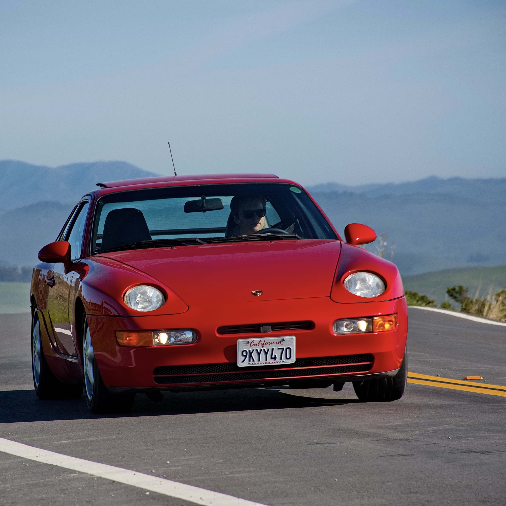
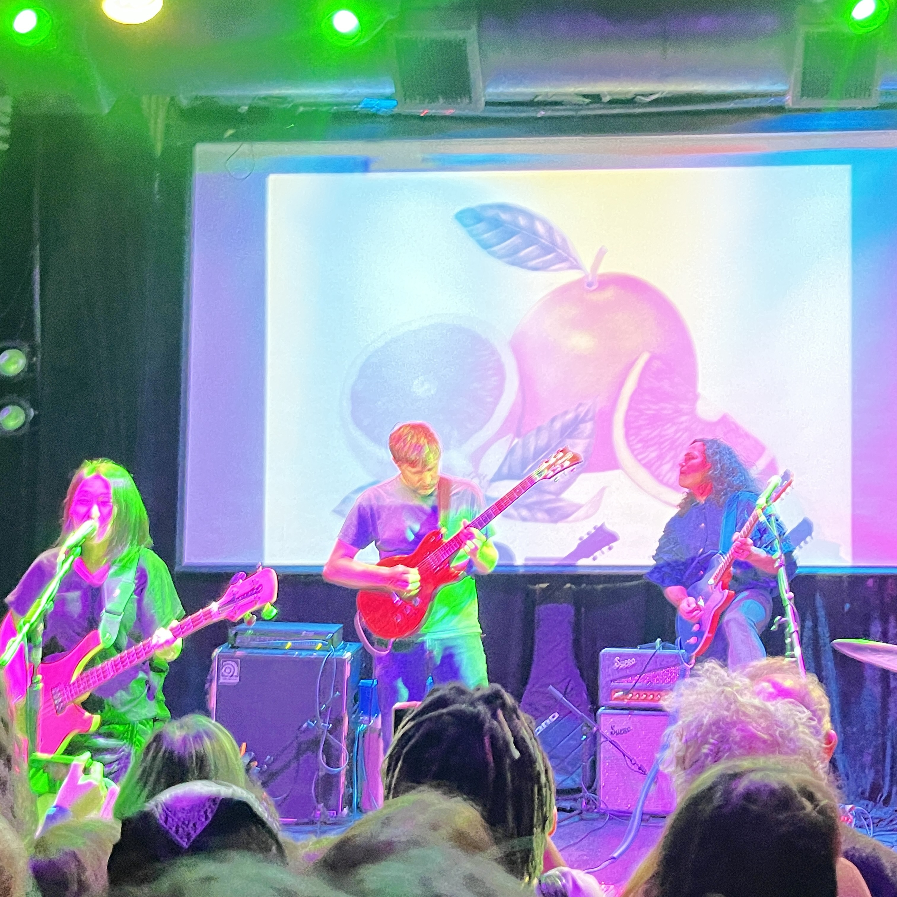
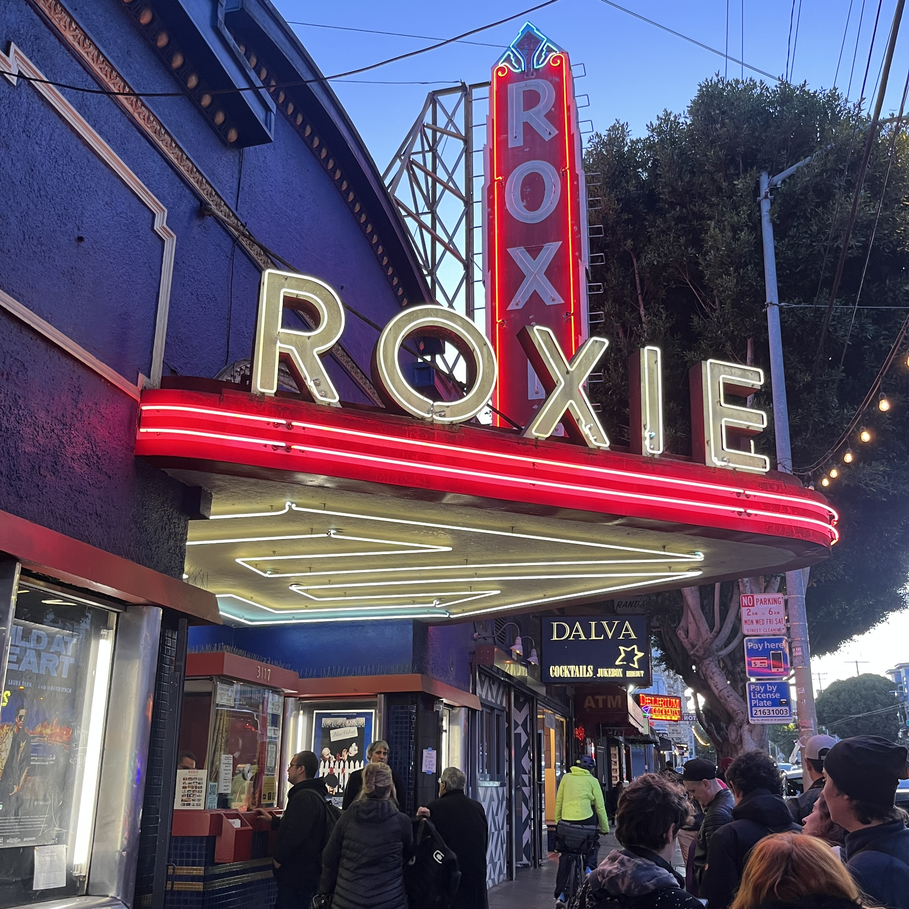

Content Operations | Knowledge Management | AI-Ready Infrastructure | People Leadership
Nine years leading teams and building the content infrastructure that organizations rely on — from DITA XML structured authoring to AI-ready knowledge platforms. I specialize in CCMS architecture, workflow reengineering, and the cross-functional operational work that turns fragmented documentation into a system that actually scales and that AI systems can actually trust.
I'm a systems-thinker with the heart of a tinkerer. I approach a global CCMS migration with the same meticulous curiosity I bring to rebuilding a PC or exploring an unconventional engine. Over the last 9 years, I've learned that technical information isn't just "help" content — it's a core component of the user journey that requires its own scalable infrastructure.
Whether it's preparing a 20,000-topic knowledge base for LLM consumption, reengineering a publication workflow that's slowing an entire organization down, or rebuilding a team through a period of attrition and structural change, I focus on the unglamorous work of making documentation a system rather than a pile of files. I build for longevity, speed, and the reliability that AI-assisted retrieval demands.
The Problem: Documentation was siloed in a legacy on-premises CCMS that couldn't integrate with modern delivery systems or AI-assisted tools, creating a growing bottleneck as the product portfolio expanded.
The System: Led end-to-end migration of 20,000+ DITA XML topics from the legacy DITAToo platform to SaaS Heretto — building an API-driven, single-source-of-truth content layer designed for structured delivery.
The Result: Content is now API-accessible to AI chatbots, voice bots, and support ticketing systems — transforming a static documentation library into a live input layer for AI-assisted customer support.
The Problem: A lack of high-fidelity data made it impossible to identify systemic bottlenecks, plan capacity accurately, or demonstrate the team's output to leadership.
The System: Architected a custom Jira-based project management ecosystem from the ground up to capture real-time team velocity, throughput, and capacity data across a globally distributed team.
The Result: Transformed a reactive operation into a data-driven one — establishing clear baselines for quarterly planning, enabling defensible resource requests, and making the team's work visible to stakeholders.
The Problem: Legacy publication cycles carried excessive cross-functional overhead and hard dependencies on other teams, taking 2–3 weeks to ship even minor content updates.
The System: Reengineered the end-to-end publication workflow to remove external dependencies and give the documentation team direct ownership of releases — a true continuous delivery model.
The Result: Reduced the publication cycle from 3 weeks to a single day. Content now ships at the speed of the product, not the speed of a cross-functional scheduling queue.
The Problem: Severe team attrition created dangerous single points of failure across critical documentation functions, placing upcoming product launch timelines and compliance requirements at risk.
The System: Implemented cross-training frameworks to maintain coverage during the gap, then executed a strategic hiring effort — two writers positioned specifically to eliminate the single-contributor dependencies that had made the team fragile.
The Result: Maintained 100% operational continuity with zero launch delays throughout the attrition period. Rebuilt team capacity to a stronger and more resilient foundation than before.
Leading a globally distributed team of writers and consultants through a period of significant transformation. The work spans people leadership, content strategy, and platform architecture — from hiring and cross-training to running the CCMS migration that turned our documentation into an API-driven content layer for AI chatbots and support systems.
Specialized in DITA XML structured documentation and Information Architecture while managing contract writers and an SEO consultant prior to formal promotion. Built the content foundation the current CCMS ecosystem runs on — hundreds of knowledge base articles, quick start guides, and the style and localization frameworks that keep it consistent.
Embedded within Scaled Agile DevOps teams to ship documentation for three major SaaS platform releases. Focused on developer experience by optimizing API documentation for a global cloud-native banking platform.
Modernized a library of 80+ industrial machinery publications — bringing the full documentation library into ANSI Z535.6 compliance and leading the transition from bulk printed manuals to digital-first QR code delivery.
Off the clock, I'm equal parts gearhead, music obsessive, and cinema nerd — which makes for an eclectic weekend schedule. My '92 Porsche 968 (a quirky front-engined sports car that most people mistake for a 944) is the best kind of project: always one step away from sorted, perpetually educational.
I'm frequently spotted at indie music venues around San Francisco. My music taste in general runs toward indie rock, noise, art-pop, and dance music. Anything that rewards a fifth listen more than a first. Or I could be at the Roxie, the famed independent theater in the Mission where I'm a member. My happy place for Lynch marathons, midnight cult screenings, and anything the multiplex won't touch.
Fill in the rest with good food, interesting bars, brainy video games, offbeat comedy, and DIY projects of every description.



A growing collection of case studies documenting the architectural and operational work behind the projects described above.
End-to-end documentation of the 20,000-topic migration — from vendor evaluation through implementation and outcomes.
PDF ResumeFull career history, skills, and accomplishments. Updated 2026.
Additional documentation of operational and architectural projects currently in development.